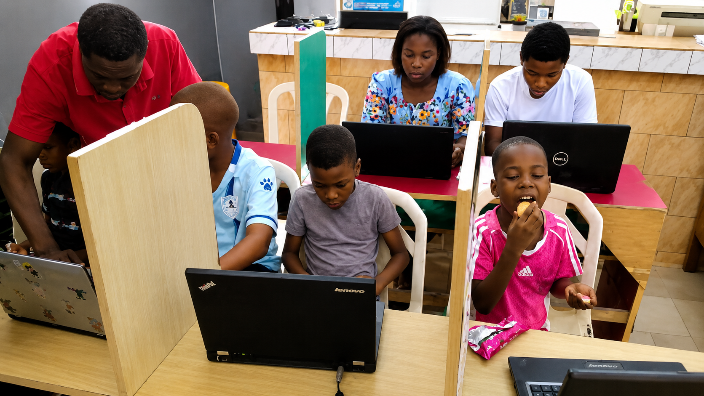

Participants bring real administrative work.
Sessions begin from practical needs: reports, minutes, circulars, research, presentations, schedules and communication tasks.
Academy moments
JENECONK AI Academy is built around guided practice: participants work with real tools, real documents and real productivity problems while facilitators support them directly.
Sessions begin from practical needs: reports, minutes, circulars, research, presentations, schedules and communication tasks.
Training moves quickly from explanation to doing, with direct support as participants use AI tools on laptops.
Learners practise review habits, responsible AI use, prompt improvement and repeatable processes rather than one-off tricks.
The result is not just awareness; teams leave with clearer workflows they can apply immediately in offices, schools and ministry administration.
Featured moment
The strongest visual proof is not a stage photo. It is the facilitator leaning in, helping a participant solve a task on a real laptop. That communicates value faster than a paragraph of claims.

Live bootcamp energy
The Academy moments now include the children and youth AI bootcamp, showing supervised laptop practice, curiosity and a real learning environment.

Built by a learner
This is one of the Academy's strongest moments: a child under 9, not a software engineer, building a simple AI learning bot after guided training. It shows parents and schools that the programme is practical, confidence-building and project-led.